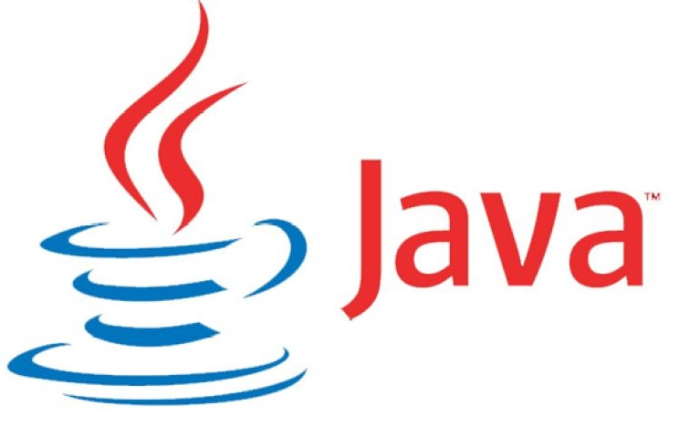
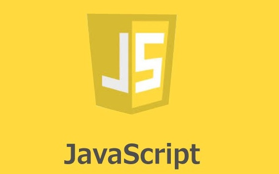
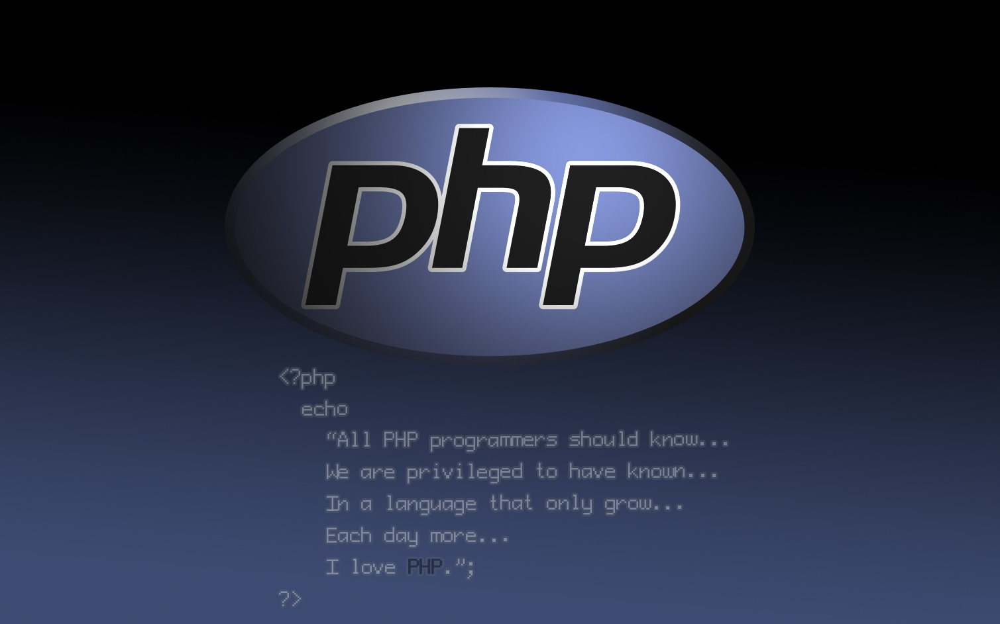
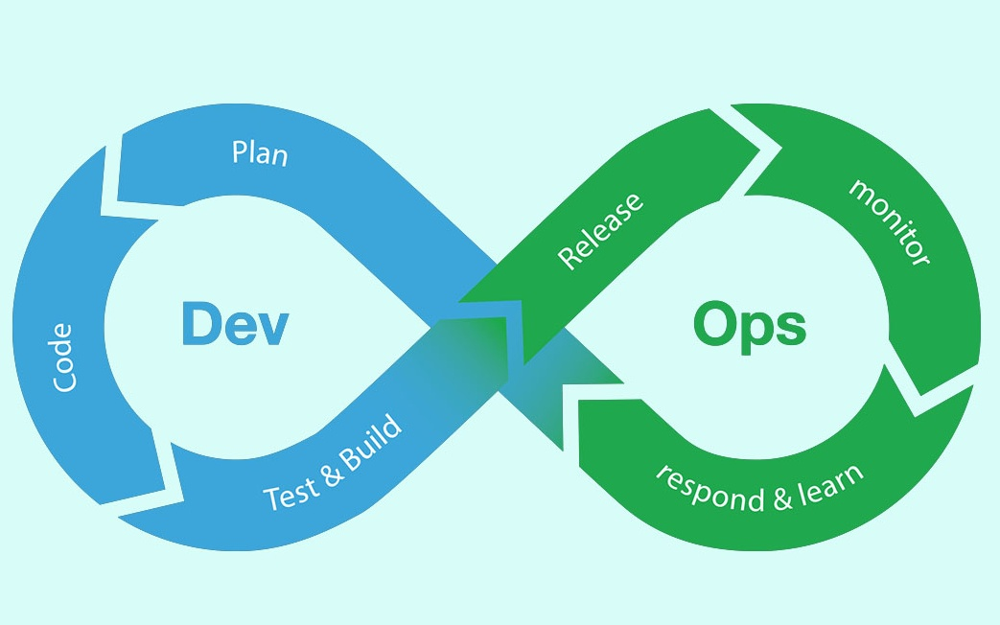

Since August 1, 2018
My Current Position
I work in an international scrum team as a DevOps Engineer, mostly with members from Germany.
Mostly I am working on various automation tasks on AWS platform, to support the application owners
with the process of the migration on the platform. Automation mostly consist of event driven Lambda Functions /
StepFunctions, deployment of IaaC templates, complience monitoring....
Previously I worked on product development. T-Systems, as an AWS Managed Service Provider provides
managed services on AWS. During these 9 months I worked mostly with CI/CD Pipelines, Virtual Private Clouds and lot's of
3rd party tools.
In my job I learned a lot about cloud best practices, AutoScaling, High Availability, Microservices or Serverless Architectures.
As a Cloud Developer I have 2 official AWS Certifications, AWS Certified Developer and AWS Solution Architect Associate.
I have a minimal knowledge about other Cloud Provider, like Azure (Active Directory, ML Services) or Google Cloud (ML)
~3 years experience (University)

I learned Java, as the main Object Oriented programming language during my studies.
I worked with technologies around Java as well, like Spring Boot, Hibernate, AspectJ, JUnit, Maven, Scala, Gradle, Android.
The 2 most interested Java project during my studies were Sociomapping and Metaprogamming in Java.
Currently Python in my most used programming language, because of it's speed and good support of mathematical functions. Unfotunately I did not have
opportunity to use it as a classical "backed" language (minimal knowledge about Flask, no Django experience), I used it mostly for scripting (AWS Lambda) or Machine Learning / Data Analysis. I am using it for my Master Thesis - Malawre Classification using Machine Learning methods.
~2 years (University, Self Study)

As long as it is the most popular programming language at the moment it is almost impossible to do not meet with JavaScript at all.
I mostly used it for Client Side scripting (jQuery, Babylon.js) and WebGL (computer graphics).
~1 year (Self Study, University)
One of my favourite domain of IT, the topic of my Master Thesis. I have some knowledge of AWS Machine Learning, most popular frameworks (basics) and scikit-learn.
As an example project in the University we created an AI based application which was intended to recognize bank robbery using the data of IOT sensors (camera, microphone).
Technologies used for this project were Flask, AWS Ec2, Python, Open MPI, Tensorflow, Keras, Docker.

Technology I used in my Bachelor Thesis, where I created a Web Content Management System based on 2 server architecture. The backed server (Apache, PHP) with goal of generating
static websites, frontend server (Raspebrry Pi3) for delivering these websites. The goal of the architecture was to increase the security of our WCMS

In my current job it is a requirement to have a "DevOps mindset", the use of CI/CD Pipelines (GitLab-CI) and automating manual steps.
~1 year experience (University)
During my studies I passed CCNA Networking Fundamentals and CCNP Routing certifications, I have a general knowledge about the networking fundamentals like
routing protocols, OSI model and used them in the AWS Cloud (DNS, Subnetting, Virtual Private Cloud)